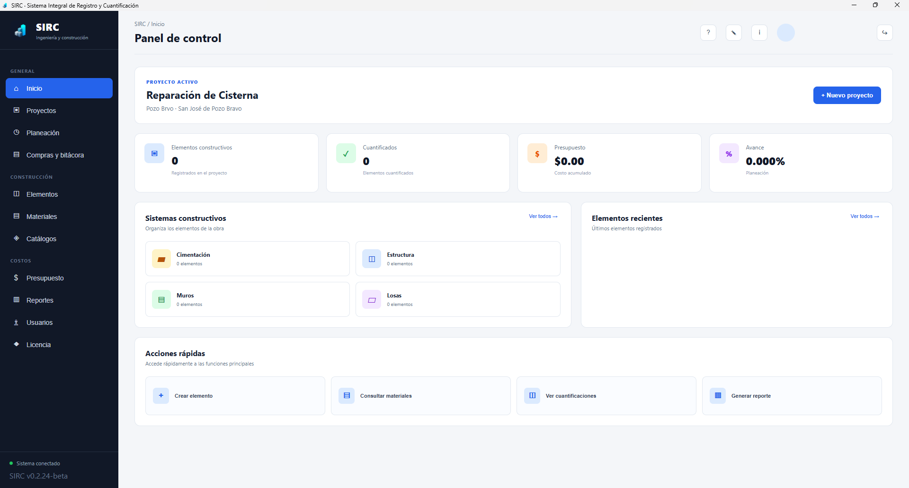
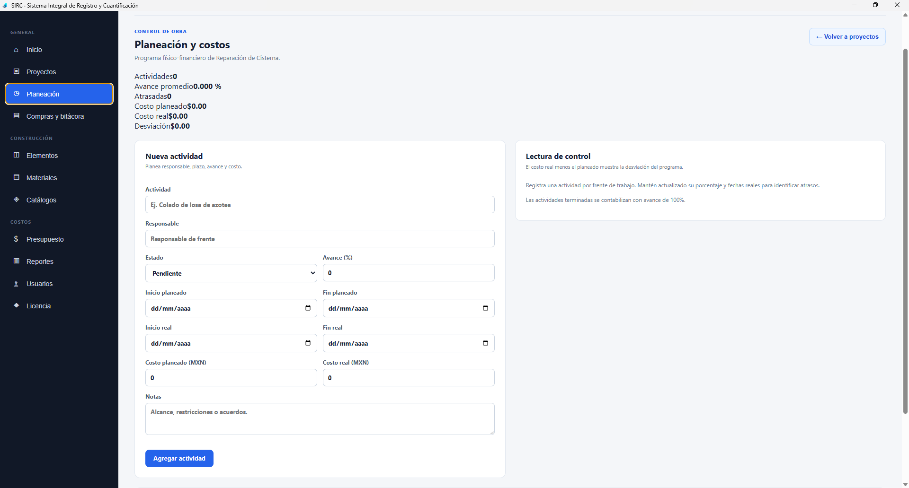
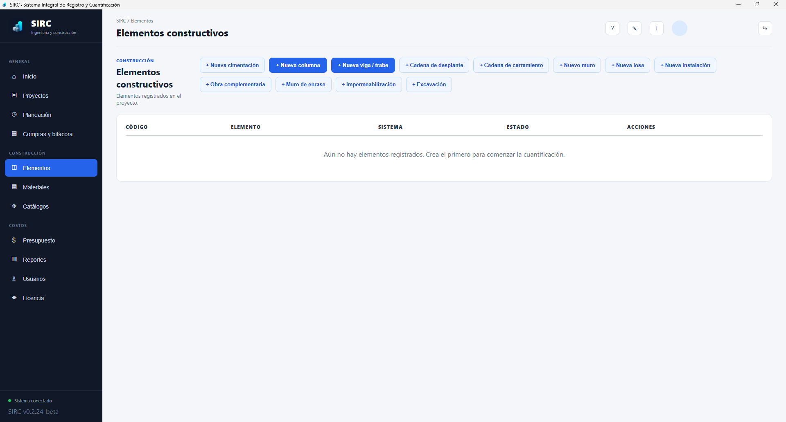
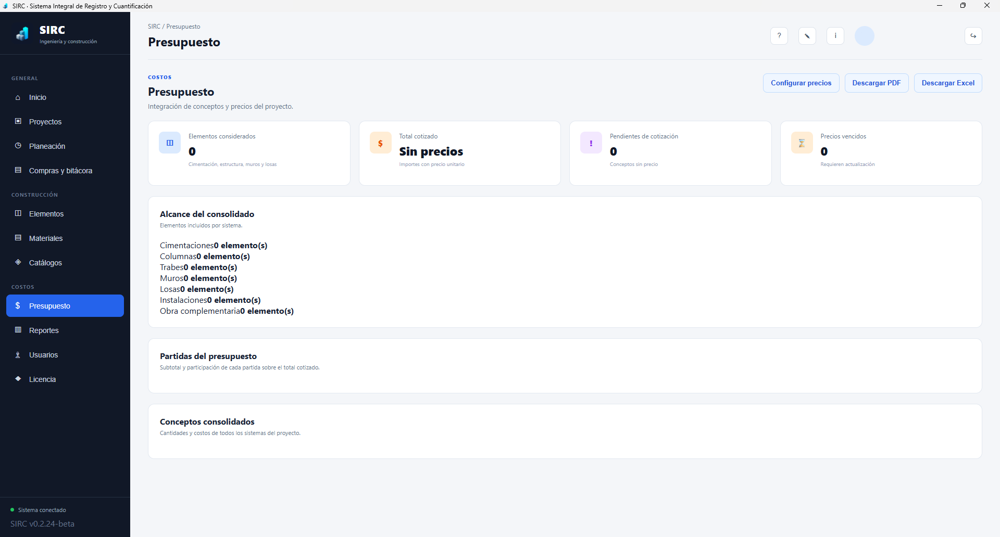
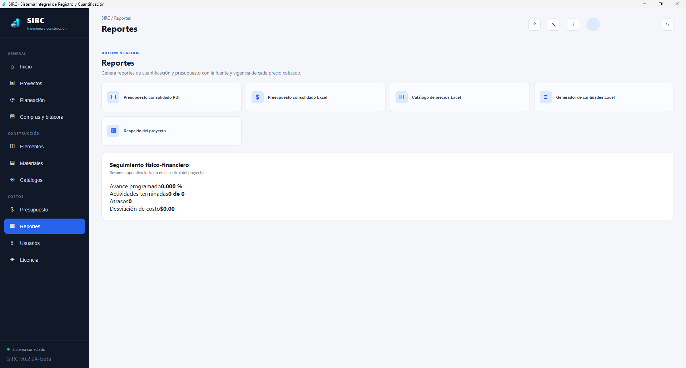
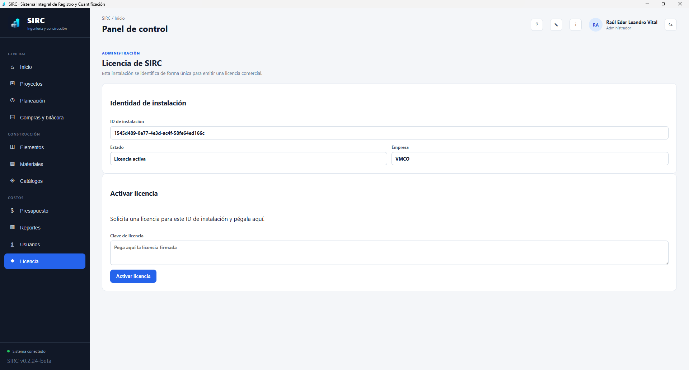
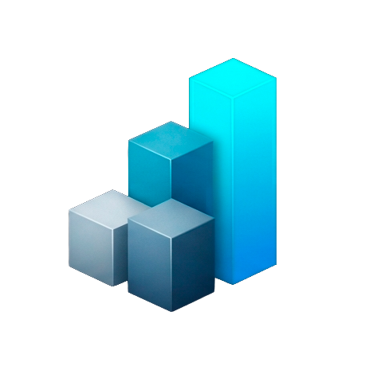

Sistema Integral de Registro y Cuantificación
Controla cada etapa de tu obra, con precisión.
SIRC integra proyectos, planeación, elementos constructivos, presupuestos, reportes y licencias en una sola herramienta para ingeniería y construcción.
Proyectos activos
24
Avance general
78%
Resumen de operación
📁
Información centralizada
Mantén presupuestos, proyectos, recursos y operaciones organizados en un solo lugar.
⚙️
Procesos más eficientes
Reduce tareas repetitivas, errores y pérdida de tiempo en la administración diaria.
📊
Decisiones con datos
Consulta indicadores, costos y avances para dar seguimiento a cada proyecto.
Todo lo que necesitas
Una herramienta pensada para tu operación
SIRC te ayuda a tener una visión más clara de tus proyectos y del rendimiento de tu empresa.
Gestión de proyectos
Da seguimiento a tus obras y actividades.
Presupuestos y costos
Controla gastos y desviaciones por proyecto.
Recursos
Organiza los recursos de tu operación.
Reportes
Obtén información para decidir mejor.
Conoce la plataforma
Todo lo que necesitas para controlar tu obra
Explora algunas de las pantallas principales de SIRC.

Panel de control
Consulta el avance, presupuesto y elementos de tu proyecto.

Planeación y costos
Registra actividades, responsables, fechas y costos planeados o reales.

Elementos constructivos
Organiza cimentaciones, estructuras, muros, losas e instalaciones.

Presupuestos
Consolida conceptos, precios, costos y partidas del proyecto.

Reportes
Genera reportes PDF, Excel, catálogos, cantidades y respaldos.

Licenciamiento
Administra la identidad de instalación y activación de tu licencia.
Empieza fácilmente
Descarga y comienza a trabajar
Descarga SIRC
Obtén el archivo desde Google Drive.
Instala el software
Sigue las instrucciones de instalación.
Comienza a gestionar
Organiza tus proyectos con SIRC.

Descarga SIRC
Da el siguiente paso para mejorar el control de tus proyectos de ingeniería y construcción.
Descargar SIRCArchivo disponible desde Google Drive.
Preguntas frecuentes
¿Dónde se descarga SIRC?
El archivo está alojado en Google Drive. Usa cualquiera de los botones “Descargar SIRC” de esta página.
¿Qué necesito para comenzar?
Descarga el archivo, instala SIRC y sigue las instrucciones incluidas con el software.
¿Para quién está diseñado?
Para empresas de ingeniería, construcción, contratistas y equipos que necesitan organizar mejor sus proyectos.